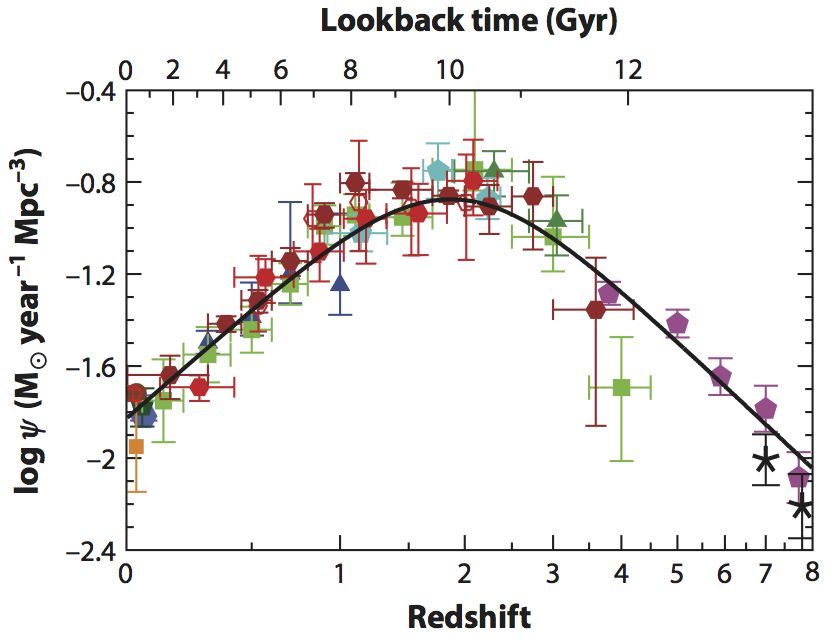

High mass star and cluster formation
Star formation drives the evolution of the universe
Star formation drives the evolution of the universe
Most stars in most galaxies formed long ago

Galaxies were smaller & denser back then
Almost all of the light in galaxies is produced by high-mass stars
The stars form in and from gas
Most of what we know of star formation in detail comes from small local clouds
Most of what we know of star formation in detail comes from small local clouds
Most of what we know of star formation in detail comes from small local clouds
Most stars form in denser regions
In denser (parts of) galaxies, more stars form in clusters
Our own Galaxy's center, the CMZ, has denser gas than the Galactic average
Our own Galaxy's center, the CMZ, has denser gas than the Galactic average
Our own Galaxy's center, the CMZ, has denser gas than the Galactic average
"Bound Cluster Fraction" verified higher in CMZ
More stars in bound clusters also generally means more stars in high-mass clusters
Is star formation in high-mass clusters different?
- The IMF should depend on density, feedback (e.g., Jones & Bate 2018, \(M_c \propto \rho^{-1/5}\) )
- Feedback from one star affects many in clustered regions
- Total star formation efficiency is higher. SFEff may be higher?
- Collisions assemble the most massive stars?
(e.g., Fujii+ & PZ 2013, but see Moeckel & Clarke 2011)
-
Interactions certainly affect disks (e.g., Wijnen+ 2017, Vincke+ 2016)
-

Low-mass clusters can have 0, 1, or several O-stars
High-mass clusters always have many
How do massive clusters get their mass?
- The mass is pre-assembled in "starless" clumps, then collapses
- The mass is assembled as stars form: there is no starless phase, gas comes from larger scales
- Better supported by observational timescale arguments
- "Conveyor Belt" of Longmore+ 2014
- Stars form in substructures, then merge into clusters
(e.g., Fujii+ 2012)
YMCs start large, collapse to small
- Gennaro+ 2017: Westerlund 1 is collapsing
- Walker+ 2015: gas is more extended than stellar cluster
Caveat: Sgr B2 is optically thick, might be much denser

Simulation: Accretion from large scales

{kind=link}
Observations: Infall toward PMCs
Massive young stars (MYSOs) affect their environment
Massive young stars (MYSOs) affect their environment
There are two key characterizations of SF:
SFR and IMF
The SFR scales linearly with cloud dense gas mass, which is often interpreted as a threshold density required to form stars.
What is a high-mass cluster?
- Gravitationally bound collection of stars that survives the loss of gas
- Collection of coeval stars that 'fully samples' the IMF
- Clusters where interactions are important
- Portegies-Zwart 2016, Vincke+ 2016, Gemma Busquet's talk earlier
- Around \(10^4~\mathrm{M}_\odot \), \(v_{esc} \gtrsim10\) km s\(^{-1}\), so ionization alone does not disrupt gas
Upper mass cutoff varies with Galactic radius in M83
YMCs are the best local analogs
of proto-Globular Clusters
- and they're pretty good analogs
- GCs probe Galaxy formation histories
- Open questions in GC populations to address with YMCs:
- How does the power-law cluster MF evolve to a peaked one?
Low-mass get destroyed, e.g. Kruijssen 2012
- How do GCs form? i.e., how should we form GCs in simulations?
- Why do GCs contain MSPs?
(what are MSPs)
- How does the power-law cluster MF evolve to a peaked one?
MSPs in GCs
- MSPs = Multiple Stellar Populations,
as opposed to SSPs = Simple (or Single) Stellar Populations
- Distinct sub-populations exist within most or all globular clusters that are younger and/or chemically different
- Bastian & Lardo 2017 ARAA review:
"Many scenarios have been suggested to explain [MSPs], with most invoking multiple epochs of star formation within the cluster", but most of these fail
Observations:
Forming high-mass clusters in the Galaxy
- Galactic plane surveys find few (~10s) of high-mass protoclusters
- Ginsburg+ 2012, Urquhart+ 2014a, b, 2018, Longmore+ 2014, 2017 Contreras+ 2017

How many are there?
- SFR \(\times\) CFE:
\( \left(2~M_\odot~\mathrm{yr}^{-1}\right) \left(0.07^{+0.07}_{-0.03}\right) f_{(>10^4\mathrm{M}_\odot)} / \left(M_{cl,10^4 M_\odot}\right)\)\(= 3-12~\mathrm{clusters~Myr}^{-1}\)(Galactic CFE from Lada & Lada 2003, Goddard+ 2010, Kruijssen 2012; \(f_{(>10^4\mathrm{M}_\odot)} = 0.4\)
- Observed: 12-18 currently forming YMCs
(excluding CMZ)- Fewer (~2) if more conservative SFE ~10% is used
- Observable protocluster lifetime ~0.2-1 Myr
YMCs form fast
- Age spreads in YMCs are small, <1 Myr
- There are no signs of starless proto-YMC clumps
- Ginsburg+ 2012, Urquhart+ 2018
- Urquhart+ 2018 estimate the 'quiescent' phase is \(<2.4\times10^4 \mathrm{yr}\) for \(M>10^4 \mathrm{M}_\odot\)
- YMCs are gas-free by ~a few Myr
Feedback and Efficiency
- Feedback appears ineffective at halting SF on small, dense scales
- Ionization-bounded HII regions are smaller, less massive: HCHII regions ionize small amounts of gas that does not escape
-
For high \(v_{esc}\) regions, mass loss can only occur via stellar winds, jets, radiation pressure, and champagne flows
(e.g., Bressert+2012, Matzner & Jumper 2015)
- Winds are ineffective (Rosen+ 2014, Lopez+ 2014)
In simulations of smaller clouds, Geen+ (2018) found factor of ~3-5 variation in efficiency purely from IMF sampling stochasticityW51 IRS 2: Ionization is eroding gas inefficiently
Photoevaporation rate \(\dot{M}_{pe}< 0.001 \mathrm{~M}_\odot \mathrm{yr}^{-1}\)
Star Formation Rate \(\dot{M}_{sf}\sim \epsilon_{ff} M_{gas} / t_{ff} \) \(= 2000 \mathrm{M}_\odot / 10^4 \mathrm{yr}\) \(=0.2 \epsilon_{ff}\mathrm{M}_\odot \mathrm{yr}^{-1}\)
Even for \(\epsilon_{ff} = 0.01\), \(\dot{M}_{sf} > \dot{M}_{pe}\)
\(\dot{M}_{pe}\) consistent with Kim, Kim, & Ostriker 2018 for \(M_{cluster}\sim2-10\times10^3 M_\odot\)Feedback is effective on cloud scales (e.g., Haid talk earlier)Structure of forming clusters
- Stars form in subtructures in the gas (e.g., filaments)
- Merging substructures smooth out, become more symmetric
- Parker & Dale 2015, Goodwin & Whitworth 2004, Grudić+ 2017
- There is debate about how long this takes and how it is affected by the presence of gas
- A consequence is that it is not immediately obvious which forming stars will become cluster members
Cluster Formation Efficiency revisited
- What fraction of all stars form in bound clusters?
- Not all do (e.g., Bressert+ 2010, Ward & Kruijssen 2018)
- Varies with environment, increasing toward higher density
- More stars formed in higher density regions in the early universe, so more in clusters
- We can measure this locally, given an appropriate change in environment
Talks by Lu, Battersby, Walker, Zeng; posters by Butterfield, Callanan, Hatchfield, Henshaw
Sgr B2: Most massive cloud + protoclusters
 Tightly bound cluster: \(\sigma_{1D} \sim 9-12~\mathrm{km~s}^{-1} \) \(\sigma_{1D} < v_{esc} \sim 14~\mathrm{km~s}^{-1}\) from RRL LOS velocitiesClustered and unclustered star formation occur together (Ginsburg+ 2018)
Tightly bound cluster: \(\sigma_{1D} \sim 9-12~\mathrm{km~s}^{-1} \) \(\sigma_{1D} < v_{esc} \sim 14~\mathrm{km~s}^{-1}\) from RRL LOS velocitiesClustered and unclustered star formation occur together (Ginsburg+ 2018)High-mass cluster formation: Sgr B2
The Cluster Formation Efficiency (CFE) is a function of density (Kruijssen 2012). Sgr B2 fits the predictions(Ginsburg & Kruijssen, in prep).
Sgr B2 fits the predictions(Ginsburg & Kruijssen, in prep).Sgr B2 N: Collapse
Collapse is morphologically obvious, but very difficult to measure (Peretto's talk): continuum is optically thick on ~1000 AU scales (Schwörer, Ginsburg, Schilke+ in prep)Fragmentation appears suppressed
Summary
- YMCs are important tools to understand Globular Cluster formation
- They are at least in part assembled from larger scales and merging subclusters
- More stars form in bound clusters at higher density
- Within forming clusters, feedback from the most massive stars affects neighbors, suppressing fragmentation
Future Directions
- Complete census of spatial and mass distribution of protostars from the ALMA-IMF program
- A direct connection between the protostellar and stellar populations with JWST imaging and spectroscopy to pierce the extinction layers
Credits: Peter Williams, git, reveal.js, MathJax, pdf.js
- Observed: 12-18 currently forming YMCs